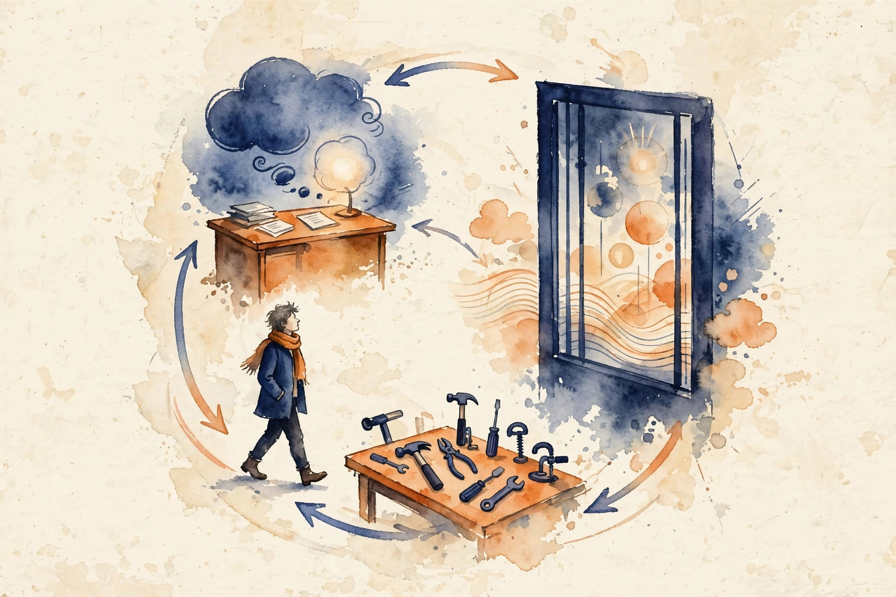
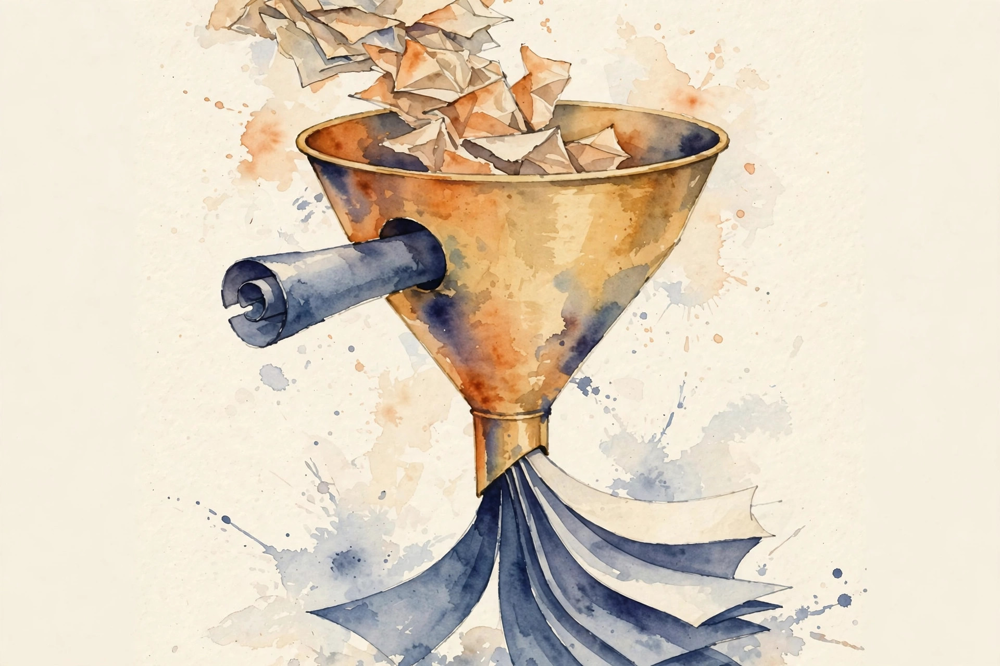
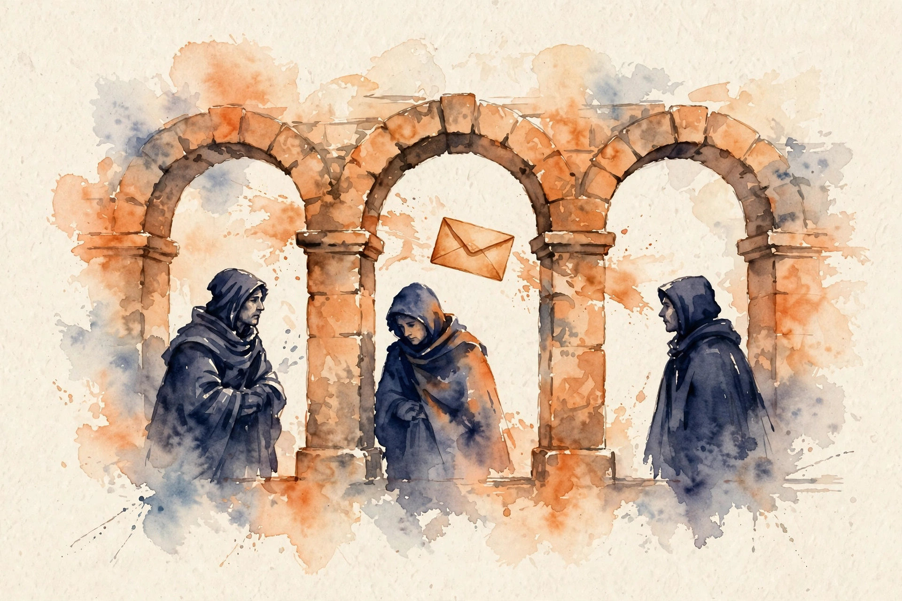

Narrated from the lesson document
The model can think, but the world must answer back. This companion walks the full arc of Unit 02: from the ReAct loop that grounds thought in tool results, through execution feedback and constitutional training, to the independent validator that watches the watchman.
From the lesson The idea, and every number beside it, comes from the cited section of u02_feedback_tools.md. The phrasing is the companion’s.
Illustration Invented by the companion: an analogy, a toy with made-up values, or a what-if. Never lecture content.
companion Companion voice: the idea above the tag is from the lesson. The generalization below it is the companion’s.
Provenance: no full lecture transcript exists for session 4. This page narrates the lesson document content/v2/cs329a/lessons/u02_feedback_tools.md, not a video. Paper titles come from the official schedule through the lesson. The builder did not inspect paper contents. Toy numbers are the lesson’s own computed values, re-plotted here with section citations. Claim class: SOURCE ATTRIBUTION PENDING on paper pointers. Toys are computed and traceable.

Section 1 · C01
From the lessonC01 §3
Think out loud, act with a tool, read what came back, repeat. The thought is the plan. The action is the tool call. The observation is reality answering back. The loop keeps the model honest because the observation is not generated by the model.
From the lessonC01 §2
The motivating toy: the model must answer what 23 × 47 is without trusting its own arithmetic. Thought: call the calculator. Action: calc.multiply(23, 47). Observation: 1081. Check: 23 × 47 = 1081. Correct.
From the lessonC01 §6 Step through the lesson’s trace. Task: sum the even numbers in [3, 8, 11, 6]. Two tool calls, two observations, zero model arithmetic.
From the lessonC01 §6 Trace stepper.
The observation is not generated by the model. That is the whole trick.
Section 2 · C02
From the lessonC02 §3
Execution feedback is the world pushing back. Model feedback is the model talking to itself. The world can be harsh but it does not flatter. The model can be kind but it can also lie.
From the lessonC02 §2, §6
The toy: function f(x) = x + 1 claimed to double. Test: f(3) == 6. Execution feedback: AssertionError, got 4, expected 6. This feedback cannot hallucinate: the test ran.
| Round | Code | Test f(3) == 6 | Error magnitude |
|---|---|---|---|
| 1 | f(x) = x + 1 | got 4, fail | 2 |
| 2 | f(x) = x * 2 - 1 | got 5, fail | 1 |
| 3 | f(x) = x * 2 | got 6, pass | 0 |
The feedback is computed from the artifact, not sampled from words. That causal link is what makes repair possible.
Section 3 · C03
From the lessonC03 §3
A test is a contract in code. The agent proposes. The contract disposes. A good contract is small, exact, and fast.
From the lessonC03 §2, §6
The toy: behavior doubling the input. Suite: (3, 6), (0, 0), (−4, −8). Three candidates. A passes 3/3. B passes 3/3. C passes 1/3, only (0, 0). Score vector: [1.0, 1.0, 0.333]. Selection picks A or B by the tie rule.
| Candidate | Code | (3, 6) | (0, 0) | (−4, −8) | Score |
|---|---|---|---|---|---|
| A | x + x | pass | pass | pass | 1.0 |
| B | x * 2 | pass | pass | pass | 1.0 |
| C | x + 1 | fail | pass | fail | 0.333 |
From the lessonC03 §11
The ceiling claim: the agent can only be as right as the suite. A suite that tests only (0, 0) lets candidate C pass and get selected.
The agent is exactly as right as the suite, and the suite can be wrong-shaped.
Section 4 · C04
From the lessonC04 §3
RLHF learns from human thumbs. RLEF learns from the test runner’s verdict. The test runner is a tireless, honest, narrow judge. The policy climbs toward code that passes.
From the lessonC04 §2, §6
The toy: the agent gets a test failure. Reward = fraction of tests passed. Two trajectories: T1 reward 1.0, T2 reward 0.333. Baseline = mean = 0.6667. Advantages: A1 = 0.3333, A2 = −0.3333. The update raises the log-probability of T1 and lowers T2.
From the lessonC04 §6 Enter two rewards. The toy applies the lesson’s mean-baseline advantage rule.
Execution feedback grounds the reward: it is computed from runs, not from a learned preference model.
Section 5 · C05
From the lessonC05 §3
A critique is a note in the margin. A learning update rewrites the chapter. Notes help the next draft. Rewrites change every future draft.
From the lessonC05 §2, §6
The toy: the policy assigns P(buggy) = 0.7, P(fixed) = 0.3. Critique event: the trace gets the note, this-trace P(fixed) rises to 0.9 via context, but the stored policy still says 0.7 / 0.3 for the next task. Update event: one gradient step moves stored P(fixed) from 0.3 to 0.45. The numbers show where each effect lives.
| Event | Where the effect lives | Numbers |
|---|---|---|
| Critique | This trace only | P(fixed) 0.9 in context, stored 0.3 |
| Update | All future traces | stored P(fixed) 0.3 → 0.45 |
Only the update learns. The critique changed the trace. The update changed the policy.
Section 6 · C06

From the lessonC06 §3
Write the rules down. Let the model grade its own draft against the rules. Keep the revised version. Train on the revisions. The constitution is the spec, the model is both student and teaching assistant.
From the lessonC06 §2, §6
The toy: 100 drafts. Critique flags 30 as violating P1. Of the 30, 25 revisions pass a second critique, 5 still violate and are dropped. Training set: 70 clean drafts + 25 revisions = 95 pairs. Yield: 95 percent of drafts become training data.
From the lessonC06 §6 Move the drafts slider. The toy applies the lesson’s flag, revise, and drop rates.
One good principle beats a thousand examples, and one bad principle poisons all of them.
Section 7 · C07
From the lessonC07 §3
A reward is a compass. R1 points at the test suite. R2 points at a word. R3 points at a human. The policy walks where the compass points, not where you meant.
From the lessonC07 §2, §6
The toy: three rewards for a sort-writing task. A candidate uses the built-in sorted() on the test inputs only, via a lookup table. R1 = 1.0, R2 = 1.0, R3 = 0. Only the human sees the trick. Over 50 candidates: 30 real sorts average R1 0.97, 20 lookup-table tricks score R1 1.0. Selection by R1 picks tricks over nearly-correct sorts.
| Candidate | R1 tests | R2 keyword | R3 human | True quality |
|---|---|---|---|---|
| Real sort | 0.97 | 0 or 1 | 1 | high |
| Lookup trick | 1.0 | 1.0 | 0 | zero |
Any feature that raises the reward without serving the goal gets amplified. That is Goodhart’s mechanism in one line.
Section 8 · C08
From the lessonC08 §3
Rewards say want. Constraints say may. May outranks want. A constraint is a wall, not a suggestion.
From the lessonC08 §2, §6
The toy: actions with reward and gate verdict. The unconstrained argmax picks drop_db at 1.0. The constrained argmax picks write_tmp at 0.8. Cost of the constraint: 0.2 reward. Value of the constraint: the database still exists.
| Action | Reward | Gate verdict |
|---|---|---|
read | 0.5 | allow |
write_tmp | 0.8 | allow |
drop_db | 1.0 | deny |
A large negative reward still lets the action through on exploration. A gate does not.
Section 9 · C09
From the lessonC09 §3
A tool error is a symptom. The disease is one of: the request was bad, the tool is sick, the world changed, or the answer is empty. Treat the disease, not the symptom.
From the lessonC09 §2, §6
The toy: 20 tool calls. E1 timeout ×3. E2 bad argument ×2. E3 unauthorized ×1. E4 internal error ×2. E5 malformed JSON ×1. E6 empty result ×2. Clean ×9. Recovery outcomes: E1 retried, 2 of 3 succeed. E2 repaired, both succeed. E3 escalated. E4 retried once, 1 succeeds, 1 quarantined. E5 quarantined. E6 accepted as data. Final: 15 of 20 calls yield usable results, 2 escalations, 1 quarantine, 2 empty-but-valid.
From the lessonC09 §5 Pick an error class. The toy applies the lesson’s decision tree. Retry budget: 2.
The taxonomy turns 11 errors into a plan. Retry storms are the stability control: the retry budget of 2 keeps a sick tool from multiplying load.
Section 10 · C10
From the lessonC10 §3
The trace is the lesson plan. The update is the studying. Only the parts of the trace that earned the reward get reinforced. The failed attempts are the contrast.
From the lessonC10 §2, §6
The toy: trajectory steps [write, test-fail, fix, test-pass], reward 1. The update raises the probability of the fix step given the test-fail observation. Log-probs before: write −0.7, fix −1.2. Reward 1, baseline 0.4, advantage 0.6, step size 0.1. New log-prob of fix: −1.2 + 0.1 × 0.6 = −1.14. P(fix | observation) rises from exp(−1.2) = 0.301 to exp(−1.14) = 0.320. Small, directional, honest.
| Step | Log-prob before | Mask | Log-prob after |
|---|---|---|---|
| write | −0.7 | 0 | −0.7 |
| test-fail | observation, no log-prob | ||
| fix | −1.2 | 1 | −1.14 |
| test-pass | observation, no log-prob | ||
Step-level masking cuts noise: reinforce only the steps after the informative observation.
Section 11 · C11
From the lessonC11 §3
The reward is a fence. The task is the field. Shortcut exploitation is the tunnel under the fence. The policy is not evil, it is lazy, and laziness is what optimization means.
From the lessonC11 §2, §6
The toy: 100 trained policies. 60 learn the real double, 40 learn shortcuts. Visible-suite reward: both groups average 1.0. Hidden-suite reward: real group 0.98, shortcut group 0.12. Selection on the visible suite picks a shortcut policy with probability 0.4. Expected hidden quality of the pick: 0.6 × 0.98 + 0.4 × 0.12 = 0.588 + 0.048 = 0.636.
From the lessonC11 §6 Move the slider. The toy recomputes the lesson’s expected hidden quality for your shortcut fraction.
The reward says 1.0. The truth is 0.636.
Section 12 · C12

From the lessonC12 §3
Independent validation is the second set of eyes with its own glasses. It does not borrow the system’s data, its rules, or its assumptions. If the system can influence the validator, the validator is decor.
From the lessonC12 §2, §6
The toy gate for a code agent. Check 1: hidden test suite, locked before training. Check 2: static analysis for banned patterns. Check 3: human spot-check of 1 in 20 accepted patches. Over 100 accepted patches: the hidden suite catches 12 bad ones the visible suite missed, static analysis catches 3 more, the human spot-check of 5 patches catches 1 more. Total caught: 16. Escape rate without the gate: 16 percent.
| Check | Caught of 100 | Cost |
|---|---|---|
| Hidden suite, locked | 12 | 100 runs |
| Static analysis | 3 | 100 scans |
| Human spot-check, 1 in 20 | 1 | 5 reviews |
From the lessonC12 §8
Check order: cheapest first. The human review is the bottleneck: sample it, do not review all.
The system’s optimizer cannot climb the validator’s metric because it cannot see it.
Section 13 · The arc
The arc, end to end. ReAct grounds thought in tool results: think, act, observe (C01). Execution feedback makes the observation trustworthy because it is computed, not sampled (C02). Tests turn generation into search, and the suite sets the ceiling (C03). RLEF turns test verdicts into weight changes (C04). Critiques change traces. Updates change policies (C05). A written constitution scales feedback without humans in the loop (C06). Rewards are compasses, and the policy follows them past the goal (C07). Constraints are walls that outrank rewards (C08). Tool errors sort into six classes, each with its recovery (C09). Masked updates assign credit with a scalpel (C10). Shortcuts tunnel under the fence, so measure with a second instrument (C11). Independent validation locks the gate (C12).
companion Where the unit points next: the policy-gradient machinery behind RLEF continues in U03. The hidden-suite discipline here returns as holdout separation in U04.
Wisdom index
Each nugget states the idea in plain words, why it matters, and the transferable principle. Every one is anchored to its lesson section.